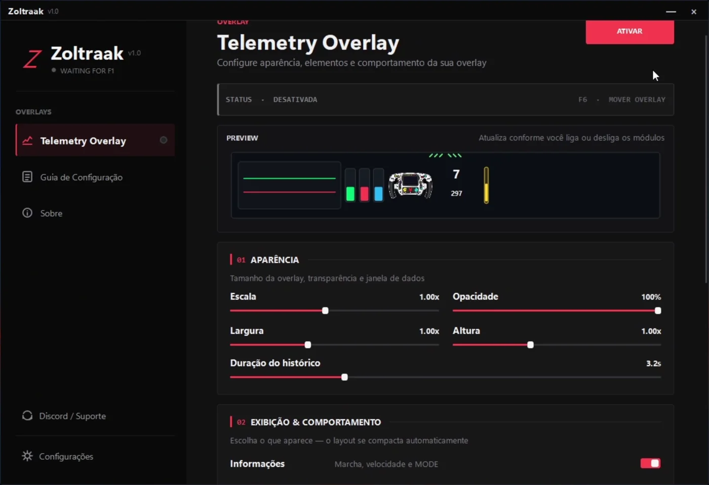

Instale
Baixe o instalador oficial pelo GitHub Releases e conclua a instalação no Windows.
Uma overlay leve e personalizável para acompanhar throttle, brake, ERS, steering, velocidade, combustível e Active Aero sem tirar o foco da pista.
Projeto pessoal • gratuito para testar • ainda em desenvolvimento
Uma interface única para ativar a overlay, escolher módulos, ajustar tamanho, opacidade e preparar tudo antes de entrar na pista.

A overlay acompanha seus inputs em tempo real enquanto você dirige. O objetivo é mostrar exatamente o necessário para entender sua pilotagem.
Throttle & BrakeAplicação, release e histórico visual dos pedais.
Steering & velocidadeCorreções de volante, marcha e KPH em um único bloco.
ERS, combustível e Active AeroDados importantes sem precisar abrir outra janela.
Não quer usar tudo? Desative módulos e o layout se compacta automaticamente. Ajuste posição, tamanho e transparência até encaixar no seu cockpit.
O próprio Control inclui um guia. Você só precisa apontar o F1 26 para o endereço e porta corretos.
Baixe o instalador oficial pelo GitHub Releases e conclua a instalação no Windows.
No F1 26: UDP 127.0.0.1, porta 20777, formato 2026 e frequência de 60 Hz.
Selecione os módulos e ajuste escala, posição, largura, altura e opacidade.
Ative a overlay e acompanhe os seus inputs em tempo real durante a sessão.
O Zoltraak Control Telemetry nasceu como um projeto pessoal para o meu próprio uso no F1 26. Eu queria uma telemetria simples, personalizável e gratuita, mas não encontrava algo que funcionasse exatamente do jeito que eu imaginava.
Então decidi criar a minha própria e compartilhar com quem também quiser testar. Não é um produto profissional ou comercial. Ainda está em desenvolvimento, pode precisar de ajustes e será melhorado com o tempo.
“Obrigado por instalar e dar uma oportunidade ao meu projeto pessoal Zoltraak Control Telemetry.”
Baixe gratuitamente pelo GitHub Releases. A instalação é simples e suas preferências ficam salvas para as próximas versões.
Sim. O Zoltraak Control Telemetry é um projeto pessoal compartilhado gratuitamente para quem quiser testar.
A versão atual foi criada para a telemetria UDP do F1 26 no Windows.
Sim. O projeto ainda está em desenvolvimento e continuará recebendo correções e melhorias.
Não existe cobrança planejada para este projeto pessoal. As versões são publicadas pelo GitHub Releases.